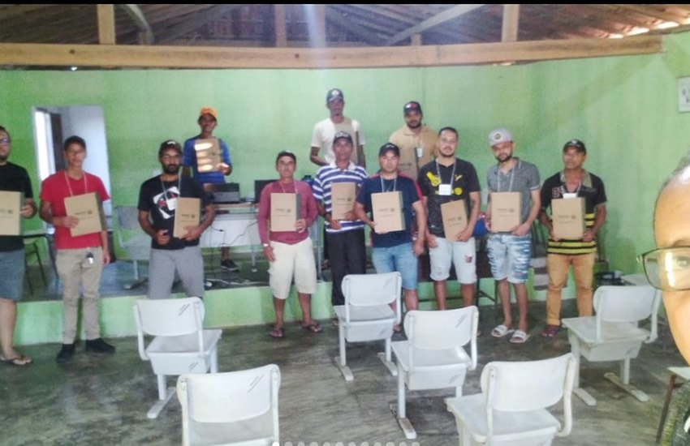
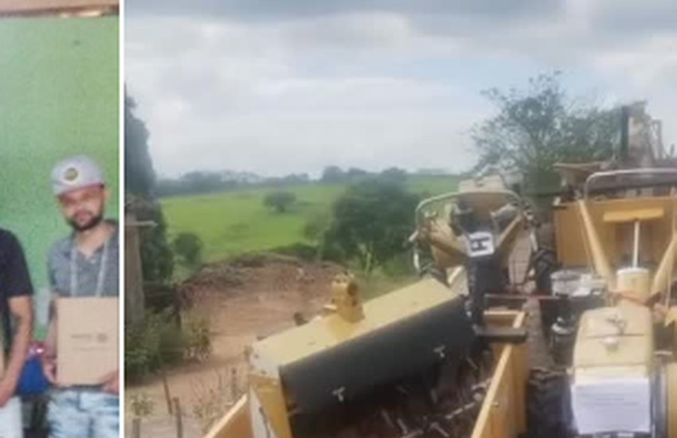
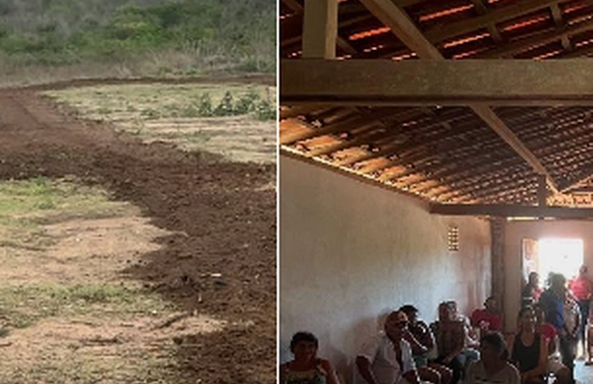
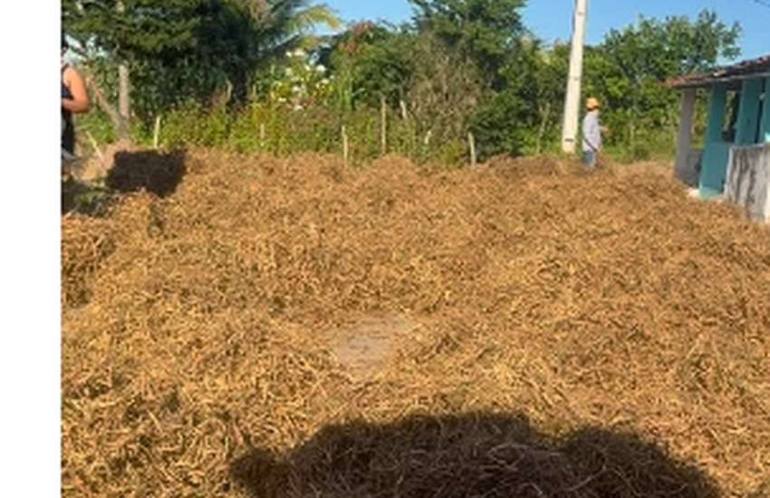

🎓 Capacitação para o campo
O perfil da associação registra um curso de operador de trator realizado em parceria com o SENAR.
Bem-vindo ao espaço institucional da Associação Comunitária de Lagoa de Santana e Adjacências, presente na comunidade de Lagoa de Barro, no município de Areia, Paraíba. Conheça nossas ações e acompanhe informações públicas da entidade.
Somos uma associação privada sem fins lucrativos, com sede na zona rural de Areia, Paraíba. Nosso estatuto prevê o desenvolvimento comunitário, a promoção da educação e da cultura, a realização de iniciativas assistenciais e a proteção ambiental.
Na comunidade de Lagoa de Barro, valorizamos a participação dos moradores e o fortalecimento das atividades rurais e sociais.
Denominação e sede conforme comprovante de CNPJ apresentado. Lagoa de Barro é o nome da comunidade informado pela associação.
Conheça registros compartilhados no perfil da associação sobre capacitações, atividades agrícolas, organização comunitária e melhorias na vida rural.

O perfil da associação registra um curso de operador de trator realizado em parceria com o SENAR.

Registros de tratores e maquinários utilizados em atividades rurais divulgadas pela comunidade.

Encontros e participação dos moradores fazem parte dos registros públicos no Instagram.

Divulgação das atividades da região e do cotidiano agrícola da comunidade de Lagoa de Barro.
Imagens recortadas das capturas de tela do Instagram fornecidas para elaboração deste site. Veja o perfil da associação ↗
Espaço para acesso público às informações institucionais, parcerias e recursos recebidos, conforme as exigências legais aplicáveis.
Comprovante de inscrição e situação cadastral do CNPJ.
Consultar PDF ↗Documento disponível para preparação de versão pública adequada.
Publicação pendenteDocumentação em preparação, observada a proteção dos dados pessoais.
Publicação pendenteOs instrumentos, valores, despesas e relatórios serão incluídos após a apresentação dos registros oficiais.
Publicação pendenteCapacitações, encontros e novidades da comunidade em nosso Instagram.